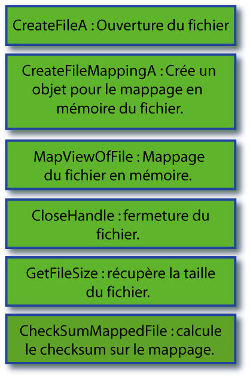
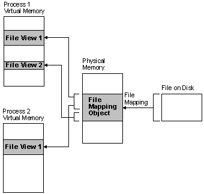

COMPRENDRE LE CHECKSUM DU HEADER
par BeatriX
Je vous propose ici un petit aperçu du fonctionnement de l'API MapFileAndChecksumA. L'idée de ce petit travail est venu d'une question de Crisanar et d'une suggestion de Neitsa. Crisanar se demandais pourquoi le checksum calculé par l'api MapFileAndCheckSum et celui calculé par WinHex étaient différents. Voici la réponse :
La fonction MapFileAndCheckSum permet de calculer le checksum que l'on trouve dans le Header de certains fichiers.
Voici la source issue du MSDN :
MapFileAndCheckSum
The MapFileAndCheckSum function computes the checksum of the specified file.
DWORD MapFileAndCheckSum( PTSTR Filename, PDWORD HeaderSum, PDWORD CheckSum );
Parameters
Filename
[in] Pointer to a null-terminated string that specifies the file name of the file for which the checksum is to be computed.
HeaderSum
[out] Pointer to a variable that receives the original checksum from the image file, or zero if there is an error.
CheckSum
[out] Pointer to the variable that receives the computed checksum.
Return Values
If the function succeeds, the return value is CHECKSUM_SUCCESS.
If the function fails, the return value is one of the following.
Return code Description
CHECKSUM_OPEN_FAILURE Could not open the file.
CHECKSUM_MAP_FAILURE Could not map the file.
CHECKSUM_MAPVIEW_FAILURE Could not map a view of the file.
CHECKSUM_UNICODE_FAILURE Could not convert the file name to Unicode.
Remarks
The MapFileAndCheckSum function computes a new checksum for the file and returns it in the CheckSum parameter. This function is used by any application that creates or modifies an executable image. Checksums are required for kernel-mode drivers and some system DLLs. The linker computes the original checksum at link time, if you use the appropriate linker switch. For more details, see your linker documentation.
Voilà ! C'est dit, ce checksum ne sert que pour tester l'intégrité des drivers et des dll, pas des exécutables...
1 ) Schéma de la fonction.
Commençons par illustrer simplement le fonctionnement de MapFileAndChecksumA.

L'API commence donc par ouvrir le fichier, crée un mappage et calcul le checksum sur ce mappage. Voici un petit schéma sur la création d'un mappage si, comme moi, c'est la première fois que vous entendez parler de cette bête là :(issu du MSDN)

Vous devez donc d'abord créer un objet qui va maintenir le lien entre le fichier et ses mappages en mémoire.
2 ) Analyse de l'API ChecksumMappedFile
Comme vous pouvez le voir sur le premier schéma, notre API MapFileAndCheckSum utilise plusieurs APIs dont ChecksumMappedFile. Sans plus attendre, je vous livre donc le secret du calcul de ce checksum. Pour faire simple, il s'agit d'additionner tous les DWORD qui composent l'exe ! Ce n'est qu'une simple addition. Pour preuve, voici la procédure qui réalise ce calcul :
76C44AA7 ADD EAX,DWORD PTR DS:[ESI].............voilà le début de nos additions. Il effectue le calcul par paquets de 128 octets.
76C44AA9 ADC EAX,DWORD PTR DS:[ESI+4]
76C44AAC ADC EAX,DWORD PTR DS:[ESI+8]
76C44AAF ADC EAX,DWORD PTR DS:[ESI+C]
76C44AB2 ADC EAX,DWORD PTR DS:[ESI+10]
76C44AB5 ADC EAX,DWORD PTR DS:[ESI+14]
76C44AB8 ADC EAX,DWORD PTR DS:[ESI+18]
76C44ABB ADC EAX,DWORD PTR DS:[ESI+1C]
76C44ABE ADC EAX,DWORD PTR DS:[ESI+20]
76C44AC1 ADC EAX,DWORD PTR DS:[ESI+24]
76C44AC4 ADC EAX,DWORD PTR DS:[ESI+28]
76C44AC7 ADC EAX,DWORD PTR DS:[ESI+2C]
76C44ACA ADC EAX,DWORD PTR DS:[ESI+30]
76C44ACD ADC EAX,DWORD PTR DS:[ESI+34]
76C44AD0 ADC EAX,DWORD PTR DS:[ESI+38]
76C44AD3 ADC EAX,DWORD PTR DS:[ESI+3C]
76C44AD6 ADC EAX,DWORD PTR DS:[ESI+40]
76C44AD9 ADC EAX,DWORD PTR DS:[ESI+44]
76C44ADC ADC EAX,DWORD PTR DS:[ESI+48]
76C44ADF ADC EAX,DWORD PTR DS:[ESI+4C]
76C44AE2 ADC EAX,DWORD PTR DS:[ESI+50]
76C44AE5 ADC EAX,DWORD PTR DS:[ESI+54]
76C44AE8 ADC EAX,DWORD PTR DS:[ESI+58]
76C44AEB ADC EAX,DWORD PTR DS:[ESI+5C]
76C44AEE ADC EAX,DWORD PTR DS:[ESI+60]
76C44AF1 ADC EAX,DWORD PTR DS:[ESI+64]
76C44AF4 ADC EAX,DWORD PTR DS:[ESI+68]
76C44AF7 ADC EAX,DWORD PTR DS:[ESI+6C]
76C44AFA ADC EAX,DWORD PTR DS:[ESI+70]
76C44AFD ADC EAX,DWORD PTR DS:[ESI+74]
76C44B00 ADC EAX,DWORD PTR DS:[ESI+78]
76C44B03 ADC EAX,DWORD PTR DS:[ESI+7C]
76C44B06 ADC EAX,0
76C44B09 ADD ESI,80
76C44B0F SUB ECX,80
76C44B15 JNZ SHORT imagehlp.76C44AA7
76C44B17 TEST EDX,EDX
76C44B19 JNZ imagehlp.76C45E52
76C44B1F MOV EDX,EAX............pour mon exemple, le checksum EAX = 49C7 206F
76C44B21 SHR EDX,10.............. On récupère EDX = 49C7 (les 2 octets de gauche)
76C44B24 AND EAX,0FFFF...........ici, on récupère EAX = 206F (les deux octets de droite)
76C44B29 ADD EAX,EDX............et on ajoute le tout , EAX = 49C7 + 206F = 6A36
76C44B2B MOV EDX,EAX
76C44B2D SHR EDX,10
76C44B30 ADD EAX,EDX
76C44B32 AND EAX,0FFFF
76C44B37 POP ESI
76C44B38 RETN 0C
Mais attention, ce n'est pas terminé...la valeur que l'on vient d'obtenir est encore un tout petit peu modifiée avant de devenir le vrai CHECKSUM . On ajoute à cette valeur la taille de l'exe :
Pour mon exemple, taille = A00.
CHECKSUM = 6A36 + A00 = 7436
Et voilà le travail ! Notez au passage que LordPE vous renvoie cette valeur également.
3 ) Pourquoi WinHex ne donne pas le même Checksum ?
WinHex permet de calculer un certain nombre de Hash et notamment un checksum (32 bit). A priori, on peut espérer qu'il s'agisse du même Checksum que celui calculé par l'api précédente. Et bien NON ! Pour mon exemple, j'obtiens un checksum de 554B.
Pour faire simple, il n'utilise pas le même algorithme de calcul ! Sans compter qu'il n'ajoute pas à la fin de son check la taille du fichier ! Voici le petit bout de code qui calcule ce « checksum » :
0040B00F MOV EAX,DWORD PTR SS:[ESP]............récupère l'adresse du fichier en mémoire
0040B012 ADD EAX,EDI.................................ajoute le décalage
0040B014 MOVZX EAX,BYTE PTR DS:[EAX]...........récupère l'octet situé en [EAX]
0040B017 ADD DWORD PTR DS:[EBX+4],EAX........fait l'addition !
0040B01A INC EDI.......................................décalage
0040B01B DEC ECX
0040B01C JNZ SHORT WinHex.0040B00F
WinHex ajoute les BYTES du fichier alors que l'API ChecksumMappedFile ajoute les DWORD du fichier et ajoute au final la taille du fichier. Ceci explique largement pourquoi les deux checksums sont complètement différents.